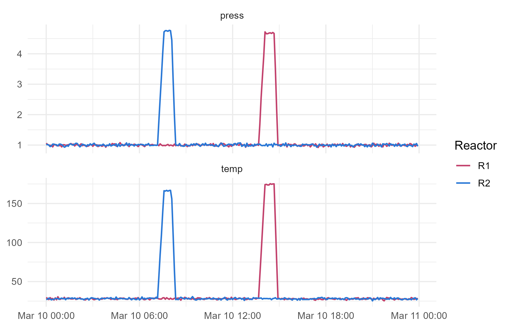

Module 1 · Lesson 3 of 14 Week 18 of 160 About 5–7 hours
Tidy data and reshaping
One variable per column, one observation per row, and the pivots that get you there
Recognize tidy data, reshape between wide and long formats with pivot_longer() and pivot_wider(), split and combine columns, and choose the right layout for the job.
The plant’s historian, the system that records every sensor, exports its data like a spreadsheet: one row per time stamp, one column per sensor. That’s easy to read by eye, but awkward to plot or summarize. The lab’s system does the opposite: one long column of results, with another column saying what each result is. The same information can be laid out in many ways, and this lesson is about the layout that makes analysis easy, called tidy data, and the tools that reshape data into it.
Reshaping data used to be one of the most frustrating jobs in data analysis. With today’s tidyr, it’s two functions you’ll use all the time: pivot_longer() and pivot_wider(). Let’s make them second nature.
In this lesson you’ll:
- recognize tidy data, and what makes data untidy
- turn wide data into long data with
pivot_longer() - turn long data into wide data with
pivot_wider() - split one column into several, and join several into one
- choose the right layout for the job
What is tidy data?
Tidy data follows three simple rules:
- Each variable is a column.
- Each observation is a row.
- Each value is a cell.
Here’s the same information, from two reactors at two times, in three layouts:
| timestamp | R1_temp_C | R1_press_bar | R2_temp_C | R2_press_bar |
|---|---|---|---|---|
| 07:35 | 29.3 | 0.99 | 166.3 | 4.72 |
| 07:40 | 27.4 | 0.98 | 165.9 | 4.76 |
| timestamp | reactor | variable | value |
|---|---|---|---|
| 07:35 | R1 | temp_C | 29.3 |
| 07:35 | R1 | press_bar | 0.99 |
| 07:35 | R2 | temp_C | 166.3 |
| … | … | … | … |
| timestamp | reactor | temp_C | press_bar |
|---|---|---|---|
| 07:35 | R1 | 29.3 | 0.99 |
| 07:35 | R2 | 166.3 | 4.72 |
| 07:40 | R1 | 27.4 | 0.98 |
| 07:40 | R2 | 165.9 | 4.76 |
The wide layout hides a variable, the reactor, inside the column names. The tidy one has a column for each real variable: the time, the reactor, the temperature and the pressure. Each row is one observation: one reactor at one moment. With data like that, every dplyr verb and every ggplot works directly.
What counts as “a variable” depends on your question, and that’s fine. The long layout is often the most useful working form, because it’s easy to filter, group and plot.
Meet the sensor log
Here’s the historian’s export for 10 March 2026: a reading every 5 minutes from both reactors.
sensor <- read.csv("data/sensor_log.csv")
dim(sensor)
#> [1] 288 5
head(sensor, 3)
#> timestamp R1_temp_C R1_press_bar R2_temp_C R2_press_bar
#> 1 2026-03-10 00:00:00 29.6 1.06 27.1 1.01
#> 2 2026-03-10 00:05:00 28.3 1.02 27.4 1.02
#> 3 2026-03-10 00:10:00 26.9 1.00 28.8 1.00Each column name packs three pieces of information: the reactor, the variable and the unit. R2_temp_C means “reactor R2, temperature, in °C”. That’s very common in instrument data, and very untidy. Let’s fix it.
pivot_longer(): wide to long
pivot_longer() takes a set of columns and stacks them into two: one column for the old column names, and one for the values:
long <- sensor |>
pivot_longer(cols = -timestamp, names_to = "tag", values_to = "value")
long
#> # A tibble: 1,152 × 3
#> timestamp tag value
#> <chr> <chr> <dbl>
#> 1 2026-03-10 00:00:00 R1_temp_C 29.6
#> 2 2026-03-10 00:00:00 R1_press_bar 1.06
#> 3 2026-03-10 00:00:00 R2_temp_C 27.1
#> 4 2026-03-10 00:00:00 R2_press_bar 1.01
#> 5 2026-03-10 00:05:00 R1_temp_C 28.3
#> 6 2026-03-10 00:05:00 R1_press_bar 1.02
#> 7 2026-03-10 00:05:00 R2_temp_C 27.4
#> 8 2026-03-10 00:05:00 R2_press_bar 1.02
#> 9 2026-03-10 00:10:00 R1_temp_C 26.9
#> 10 2026-03-10 00:10:00 R1_press_bar 1
#> # ℹ 1,142 more rowscols = -timestamp means “every column except the time stamp”. The result has 4 rows for every original row: 288 × 4 = 1,152.
The tag column still packs three things together. pivot_longer() can split the names as it goes. Give names_to one name per piece, and say what separates them with names_sep:
long <- sensor |>
pivot_longer(cols = -timestamp, names_to = c("reactor", "variable", "unit"),
names_sep = "_", values_to = "value")
head(long, 4)
#> # A tibble: 4 × 5
#> timestamp reactor variable unit value
#> <chr> <chr> <chr> <chr> <dbl>
#> 1 2026-03-10 00:00:00 R1 temp C 29.6
#> 2 2026-03-10 00:00:00 R1 press bar 1.06
#> 3 2026-03-10 00:00:00 R2 temp C 27.1
#> 4 2026-03-10 00:00:00 R2 press bar 1.01Now every piece of information has its own column, and you can plot the whole day in one go:
long |>
filter(value < 500) |> # drop one sensor glitch (Lesson 11)
mutate(timestamp = as.POSIXct(timestamp, tz = "UTC")) |>
ggplot(aes(x = timestamp, y = value, color = reactor)) +
geom_line(linewidth = 0.7) +
facet_wrap(~ variable, ncol = 1, scales = "free_y") +
scale_color_manual(values = c(R1 = "#C2416C", R2 = "#2a78d6")) +
labs(x = NULL, y = NULL, color = "Reactor") +
theme_minimal(base_size = 12)
You can see both batches of the day: B18 on reactor R2 in the morning, and B17 on R1 in the afternoon. Temperature and pressure rise together, hold, then fall.
Your turn. Pivot the sensor log longer, splitting the names into reactor, variable and unit, and count how many rows you get for each reactor.
names_to needs one new column name for each piece of the old names: c("reactor", "variable", "unit").
library(dplyr)
library(tidyr)
sensor <- read.csv("data/sensor_log.csv")
sensor |>
pivot_longer(cols = -timestamp, names_to = c("reactor", "variable", "unit"),
names_sep = "_", values_to = "value") |>
count(reactor)576 rows per reactor: 288 time stamps, two variables each.
pivot_wider(): long to wide
pivot_wider() does the opposite: it spreads one column of values out across several new columns, named after another column. The lab results are long, with one row per measurement:
lab <- read.csv("data/lab_results.csv")
head(lab[, c("batch_id", "analyte", "value", "retest")], 4)
#> batch_id analyte value retest
#> 1 B02 purity 98.7 FALSE
#> 2 B02 water 154.0 FALSE
#> 3 B02 color 13.0 FALSE
#> 4 B01 purity 98.9 FALSETo compare analytes batch by batch, it helps to have one row per batch, with a column for each analyte:
lab_wide <- lab |>
filter(!retest) |>
select(batch_id, analyte, value) |>
pivot_wider(names_from = analyte, values_from = value)
lab_wide
#> # A tibble: 40 × 4
#> batch_id purity water color
#> <chr> <dbl> <dbl> <dbl>
#> 1 B02 98.7 154 13
#> 2 B01 98.9 184 21
#> 3 B03 99.6 221 15
#> 4 B04 98.8 219 21
#> 5 B06 98.9 174 14
#> 6 B05 99.2 221 11
#> 7 B08 97.7 195 32
#> 8 B07 99.2 217 17
#> 9 B09 98.6 154 21
#> 10 B10 97.6 238 22
#> # ℹ 30 more rowsnames_from says which column supplies the new column names, and values_from which supplies the values. Look at batches B12 and B33: they get NA for water, because those two water tests were never run. pivot_wider() fills any missing combination with NA.
WarningDuplicates make lists
Why filter out the re-tests first? Without that, some batches have two purity results, so pivot_wider() doesn’t know which one to put in the cell. It warns you, and puts both into a list-column. Decide what you want first: the first test, the re-test, or their mean (values_fn = mean).
Your turn. Make a wide table of the re-tests only, with one row per batch and a column for each analyte.
The new column names come from analyte, and the values from value: names_from = analyte, values_from = value.
library(dplyr)
library(tidyr)
lab <- read.csv("data/lab_results.csv")
lab |>
filter(retest) |>
select(batch_id, analyte, value) |>
pivot_wider(names_from = analyte, values_from = value)Only purity was ever re-tested, so there’s just one analyte column.
Splitting and combining columns
Sometimes one column holds two variables. A time stamp holds a date and a time, and a sample code like B18-S2 holds a batch and a sample number. separate_wider_delim() splits a column at a delimiter:
samples <- data.frame(code = c("B18-S1", "B18-S2", "B07-S1"))
samples |>
separate_wider_delim(code, delim = "-", names = c("batch_id", "sample"))
#> # A tibble: 3 × 2
#> batch_id sample
#> <chr> <chr>
#> 1 B18 S1
#> 2 B18 S2
#> 3 B07 S1unite() goes the other way, gluing columns together with a separator:
long |>
unite("tag", reactor, variable, sep = "_") |>
head(3)
#> # A tibble: 3 × 4
#> timestamp tag unit value
#> <chr> <chr> <chr> <dbl>
#> 1 2026-03-10 00:00:00 R1_temp C 29.6
#> 2 2026-03-10 00:00:00 R1_press bar 1.06
#> 3 2026-03-10 00:00:00 R2_temp C 27.1(Older code uses separate(), which still works. separate_wider_delim() is its newer, stricter replacement.)
Your turn. Split the sensor log’s timestamp into a date column and a time column. They’re separated by a space.
The delimiter is a single space: delim = " ".
library(dplyr)
library(tidyr)
sensor <- read.csv("data/sensor_log.csv")
sensor |>
separate_wider_delim(timestamp, delim = " ", names = c("date", "time"))For real date and time work, Lesson 10’s lubridate package is better. But splitting is often all you need.
Long data is easy to summarize
With data in long form, a summary for every reactor and variable is one pipeline:
long |>
group_by(reactor, variable) |>
summarise(max = max(value, na.rm = TRUE), .groups = "drop")
#> # A tibble: 4 × 3
#> reactor variable max
#> <chr> <chr> <dbl>
#> 1 R1 press 4.72
#> 2 R1 temp 1000.
#> 3 R2 press 4.77
#> 4 R2 temp 167.A maximum temperature of 999.9 °C on R1? That’s not a runaway reactor: it’s a sensor glitch, a single bogus reading. Real data is full of surprises like this, and Lesson 11 shows how to catch them systematically. For now, notice how quickly the long layout let you spot it.
Your turn. Find the highest real temperature on each reactor: pivot longer, keep only the temperatures below 500 °C, then summarize.
Add a second condition inside filter(): value < 500.
library(dplyr)
library(tidyr)
sensor <- read.csv("data/sensor_log.csv")
sensor |>
pivot_longer(cols = -timestamp, names_to = c("reactor", "variable", "unit"),
names_sep = "_", values_to = "value") |>
filter(variable == "temp", value < 500) |>
group_by(reactor) |>
summarise(max_temp = max(value, na.rm = TRUE))About 175 °C on R1 (batch B17) and 167 °C on R2 (batch B18).
Which layout when?
| Layout | Best for |
|---|---|
| Long (one row per measurement) | Plotting with ggplot2, summarizing by group, storing in a database |
| Tidy (one column per variable) | Most analysis: dplyr pipelines, models, correlations |
| Wide (one column per group or time) | Tables for people to read, matrices, some statistical methods |
You’ll move between them constantly. That’s normal, and now it’s easy.
Challenge round
Challenge 1 · Straight to tidy. Turn the sensor log into the tidy layout in one step: columns timestamp, reactor, temp_C and press_bar, with one row per reactor per time stamp. pivot_longer() has a special name for this, ".value", which means “use this part of the old column name as a new column name”.
names_pattern is a regular expression with two groups in parentheses: one for the reactor, and one for the rest. "(R[12])_(.*)" captures R1 or R2, then everything after the first underscore.
library(dplyr)
library(tidyr)
sensor <- read.csv("data/sensor_log.csv")
sensor |>
pivot_longer(cols = -timestamp, names_to = c("reactor", ".value"),
names_pattern = "(R[12])_(.*)")Each old name like R2_temp_C is split into R2, which goes into the reactor column, and temp_C, which becomes a column name. 576 rows, one per reactor per time stamp.
Challenge 2 · A stability study. A lab tests how an impurity grows while three samples sit in storage. The results came as a wide table, with one column per week. Pivot it into long form with a numeric week column and an impurity_pct column.
names_prefix removes text from the start of every name: here "wk". Then names_transform = as.numeric turns what’s left, like "8", into a number.
library(dplyr)
library(tidyr)
stability <- data.frame(sample = c("S1", "S2", "S3"),
wk0 = c(0.10, 0.12, 0.09), wk2 = c(0.14, 0.15, 0.13),
wk4 = c(0.19, 0.21, 0.17), wk8 = c(0.29, 0.30, 0.27))
stability |>
pivot_longer(cols = -sample, names_to = "week", values_to = "impurity_pct",
names_prefix = "wk", names_transform = as.numeric)With a numeric week, you could now plot impurity against time, or fit a line to it (Module 2).
Quick quiz
1. Which of these is a rule of tidy data?
Tidy data has one column per variable, one row per observation and one value per cell.
2. A table has the columns batch_id, Jan, Feb and Mar, holding monthly yields. What’s untidy about it?
Pivoting longer would give the columns batch_id, month and yield.
3. Which function turns many columns into two: one of names, one of values?
pivot_longer() makes data longer. pivot_wider() spreads it out into more columns.
4. You run pivot_wider(), and it warns that values aren’t uniquely identified. What does that mean?
Decide how to handle the duplicates first: filter them, or summarize them with values_fn.
5. What does pivot_wider() put in a cell when that combination doesn’t exist in the long data?
Missing combinations become NA, like the two water tests that were never run. You can choose a different filler with values_fill.
6. Which layout is usually easiest for plotting several groups with ggplot2?
In long data, the group is a variable you can map to color or facets.
Wrap-up
You can reshape anything now. Here’s what you’ve learned:
- Tidy data: each variable a column, each observation a row, each value a cell.
- Wide to long:
pivot_longer(), withnames_sep,names_pattern,names_prefixandnames_transformto clean up the old names as you go. - Long to wide:
pivot_wider(), withnames_fromandvalues_from. Duplicates make list-columns, and missing combinations makeNAs. - Split and glue:
separate_wider_delim()splits a column;unite()combines columns. - Choose the layout for the job: long for plotting and grouping, tidy for analysis, wide for people to read.
TipPractice in RStudio (optional, about an hour)
Work in your plant-study project. Download sensor_log.csv and lab_results.csv into data-raw/.
- Tidy the historian. Write
R/02_tidy_sensors.R, which reads the sensor log, makes it tidy with the.valuetrick, convertstimestampto a date-time withas.POSIXct(timestamp, tz = "UTC"), and writesdata/sensors_tidy.csv. - Plot it. Recreate this lesson’s chart from your tidy file, and save it to
output/. - A wide lab table. Make a table with one row per batch and columns for purity, water and color, using the mean of any re-tests (
values_fn = mean). Save it asdata/lab_wide.csv. - Round trip. Pivot your wide lab table back to long. Do you get the same number of rows you started with? Why not?
NoteKey words from this lesson
- Tidy data
- Data with one variable per column, one observation per row and one value per cell.
- Wide format
- A layout with one column per group or time point, such as one column per sensor.
- Long format
- A layout with one row per measurement, and columns saying what each value is.
pivot_longer()- Stacks many columns into a column of names and a column of values.
pivot_wider()- Spreads a column of values into many columns, named after another column.
.value-
In
pivot_longer(), the part of the old column names that should become new column names. - List-column
-
A column whose cells hold lists.
pivot_wider()makes one when combinations aren’t unique.
NoteWant to read more?
- R for Data Science (2e), “Data tidying”. Tidy data and pivoting, with many more examples.
- Hadley Wickham, “Tidy Data”, Journal of Statistical Software (2014). The original paper: readable, and full of examples of untidy data in the wild.